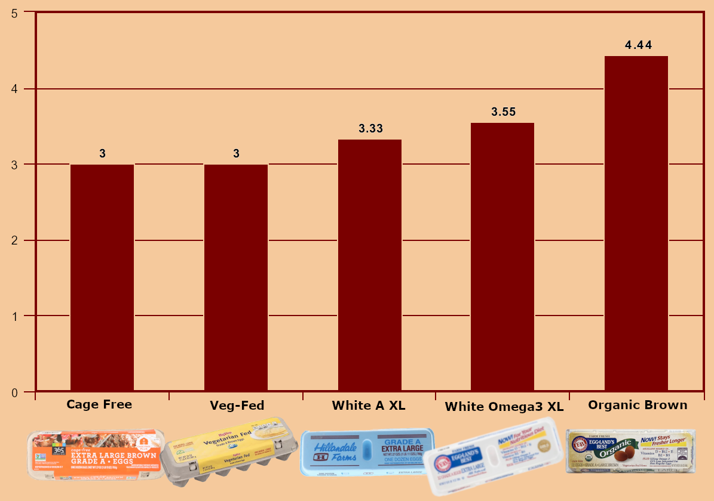
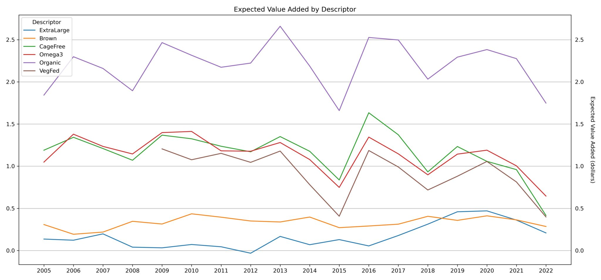

October 24, 2022
Are cage-free eggs cheaper than cage eggs? And why the price of eggs has been so weird
I originally wanted to entitle this article “What the #@%& is Going On with the Price of Eggs?”, because that’s the question I keep asking myself on every visit to the grocery store. I know inflation has dominated the news cycle and is one of the top issues facing the world economy, but these prices are egg-regious (sorry). What’s more perplexing is that cage-free eggs seem cheaper than standard eggs; how could this be? Fortunately, the USDA releases weekly price data on eggs, so I could research this question, but first, we need to go over how eggs are classified.
How eggs are classified
Before writing this article, my understanding of what eggs you could buy was very limited: I thought there were the fancy, environmentally conscious, brown eggs that come in the ultra-protective double-hinged plastic container, and then there were the regular white eggs that come in a styrofoam container.
Well, it turns out that the USDA has specific regulations on the labeling of egg cartons; they are described in four ways: by their size, class, color, and marketing statements (production practice or quality). The USDA tracks price data on a subset of these descriptors (matching the ones most often found in grocery stores); we'll be discussing those.
Size
- Large — at minimum 24 oz.
- Extra Large — at minimum 27 oz.
Color
- White
- Brown
Class & Marketing Statements (Classification)
- A — A quality, the kind most often found in grocery stores (although we’ll use Grade A synonymously with standard i.e., not cage-free, veg-fed, organic, or omega-3)
- AA — the highest quality rating
- Cage-Free — the confinement area is limited to a building or room where the hens are free to roam
- Veg-Fed — the hens are fed a vegetarian diet (why this is preferable is beyond me)
- Omega-3 — laboratory analysis proves a high quantity of Omega-3 fatty acid content in the eggs
- Organic — eggs originate from a certified organic flock
Although the eggs can be a combination of different classes and marketing statements, the USDA only records one for tracking price data.
The Current State of Egg Prices
In my quest to understand egg inflation, or egg-flation as people are saying — or perhaps, just me, to unamused shoppers as I jot down egg notes in the dairy section — I found the most common grocery store eggs, in my area at least, to be the following:
- White/A/Extra Large
- Omega-3/White/Extra Large
- Veg-Fed/Brown/Large
- Cage-Free/Brown/Extra Large
- Organic/Brown/Large
Here’s a chart of their average prices in September.
My suspicions were confirmed: cage-free eggs are cheaper than regular eggs right now, but why? Did inflation only affect the standard white dozen? Well, the answer is more complicated than that. According to the Consumer Price Index, food costs in September 2022 increased by around 11.2% from last year. While Veg-Fed/Brown/Large (10.2%), Organic/Brown/Large (8.5%), and Omega-3/White/Extra Large (7.9%) eggs similarly followed that increase, Cage-Free/Brown/Extra Large (-6.5%) eggs decreased and White/A/Extra Large (42.4%) increased almost 4x that.
You can see in the graph below that, since the beginning of 2021, Cage-Free/Brown/Extra Large eggs are trending downward in price.
Note: Mobile users may have issues viewing Tableau charts, I've include them as images at the bottom of the page.

Organic, omega-3, and veg-fed eggs are trending upward in price at similar rates as each other, cage-free eggs, as a whole, are trending upward to a lesser degree, but the upward trend of Grade A eggs is stark in comparison.

The price gap between Grade A (the caged variety) and Cage-Free eggs is narrowing; this we know, but why? Well, there are two reasons:
- Consumer preference
- Disease
The Switch to Cage-Free
People have been calling for more humane animal farming practices for quite some time, and the calls to switch to cage-free egg production has finally been set into motion on a grand scale. According to PBS, only 4% of egg production was cage-free in 2010, now it’s above 30%, and is expected to be above 70% in the next four years. Even McDonald’s plans to be 100% cage-free by 2025. This rapid increase in the supply of cage-free eggs explains its comparably lower price, but it doesn’t explain the price explosion of the standard dozen.
The Bird Flu Outbreak
Starting in January, there has been a massive outbreak of H5N1 (avian influenza). Although all chickens, cage-free or not, are susceptible to the virus, it does not affect the price of eggs equally. We know this because, between December 2014 and June 2015, H5N1 caused the loss of 12% of egg-laying chickens.
You can see in the data below that egg prices soared in 2015, but cage-free, omega-3, veg-fed, and organic increases were much milder.

The graph below shows that the expected value added by different egg classifications to the average price decreased during that period indicating that the price of the standard dozen is much less stable (to disease) than the other eggs.
This demand-pull inflation acting on the Grade A egg is further exacerbated by farmers choosing to reduce or halt production during this outbreak to update their cage facilities to cage-free ones.
Greater implications...
I expect the price of Grade A eggs to drop after this avian flu dissipates, although some scientists believe it may linger for quite a while. However, I also expect the price differential between Grade A and cage-free to continue to narrow, and we’ll find cage-free to be cheaper much more often than we have before.
The greater implications of this moment in egg history may be vindication for “dollar voting”. Not a year ago, I would have thought cage-free eggs undercutting the styrofoam dozen highly unlikely. Years of consumer preference (and California law) have convinced farmers they need to make the switch, albeit a slow one. Perhaps industry changes are more possible than we think.
View all the data on Tableau Public
∎